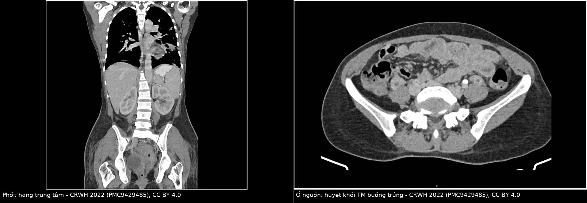
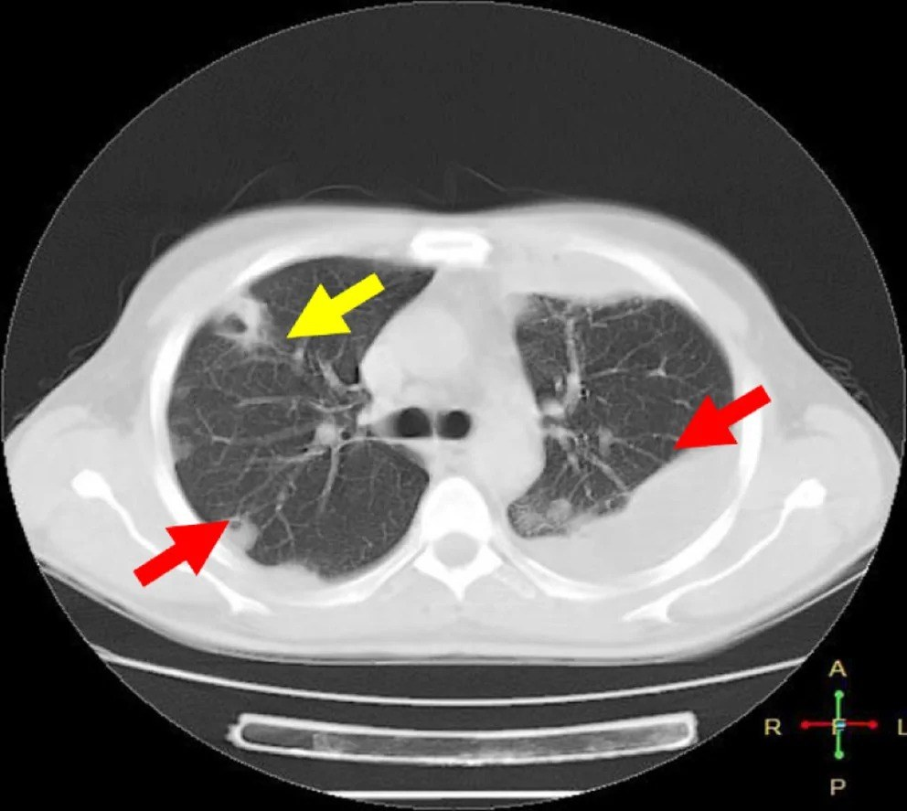

1904 — Thuyên tắc phổi nhiễm khuẩn từ ổ nhiễm tĩnh mạch trong bụng–chậu: nốt/hang ngoại vi, tìm ổ nguồn và thời gian kháng sinh
Tags: pattern:not pattern:hang pattern:thuyen-tac-nhiem-khuan vung:phoi vung:mang-phoi vung:gan vung:mach-cua vung:chau protocol:CTPA protocol:CT-bung-co-can-quang protocol:sieu-am-bung
Mức chắc chắn (certainty): tổng hợp y văn (literature synthesis) — ghép ca huyết khối tĩnh mạch buồng trứng sau sinh có thuyên tắc phổi nhiễm khuẩn (Case Rep Womens Health 2022, PMC9429485), 15 ca pylephlebitis (Life 2025, PMC12565192), tổng quan hệ thống 28 ca viêm tắc tĩnh mạch mạc treo do viêm túi thừa (Korean J Gastroenterol 2026, PMC13407495), tổng quan điều trị huyết khối tĩnh mạch nhiễm khuẩn (Infect Dis Rep 2026, PMC13116947), 15 trẻ thuyên tắc phổi nhiễm khuẩn (Front Pediatr 2026, PMC13212526) và ca thuyên tắc phổi nhiễm khuẩn có dấu mạch nuôi (Clin Case Rep 2026, PMC13563167). Không có ca do nhóm tự chụp.
Câu hỏi thực hành: nữ 38 tuổi, 8 ngày sau sinh, sốt 39 °C kéo dài dù đã dùng kháng sinh phổ rộng, ho, khó thở, đau bụng dưới bên phải. CT ngực: nhiều nốt ngoại vi, một số có hang. Câu hỏi: đây là di căn, lao, hay thuyên tắc nhiễm khuẩn?, ổ nguồn nằm ở đâu, kháng sinh bao lâu và có dùng kháng đông không? Nối 163 – Pylephlebitis & huyết khối tĩnh mạch mạc treo, 1623 – Huyết khối tĩnh mạch buồng trứng sau sinh, 025 – Hang & nấm phổi, 070 – Thuyên tắc phổi cấp.
1. Tổng hợp bệnh học – cơ chế hình ảnh: vì sao huyết khối nhiễm khuẩn trong bụng lại tạo hang ở phổi
- Định nghĩa: thuyên tắc phổi nhiễm khuẩn (septic pulmonary embolism, SPE) = mảnh huyết khối chứa vi khuẩn bong từ một ổ nhiễm tĩnh mạch (hệ cửa, tĩnh mạch chậu/ buồng trứng, catheter, tĩnh mạch cảnh trong, mảnh ghép nội mạch) đi vào tuần hoàn phổi, gây nhồi máu phổi nhiễm khuẩn và thường hóa mủ/ tạo hang.
- TẠI SAO nốt nằm NGOẠI VI và ở đáy phổi: động mạch phổi phân chia kiểu phân nhánh, tiểu động mạch tận cùng nằm sát màng phổi ở ngoại vi; mạch máu ở thùy dưới nhiều và dài hơn → mảnh tắc dừng ở ngoại vi, đáy phổi. Đây là lý do hình ảnh là nốt/ đám ngoại vi, hình nêm, đáy hướng về màng phổi, không theo phân thùy như viêm phổi thông thường.
- TẠI SAO có hang: vùng phổi bị tắc mạch nhồi máu → hoại tử vô khuẩn → vi khuẩn từ cục tắc xâm nhập → hóa mủ → hang. Hang xuất hiện muộn hơn nốt (thường sau 1–2 tuần), nên CT sớm chỉ thấy nốt đặc không loại trừ SPE.
- Dấu mạch nuôi (feeding vessel sign): trên CT, một nhánh mạch máu chạy thẳng vào nốt — tương ứng đường đi của cục tắc. Dấu này gợi ý mạnh nguồn mạch, nhưng không đặc hiệu (gặp cả ở di căn).
- Tần suất – con số thực:
- Huyết khối tĩnh mạch buồng trứng (ovarian vein thrombophlebitis, OVT): gặp ở 0,01–0,02% sinh đường âm đạo và 0,1% sinh mổ (PMC9429485) — hiếm nhưng là nguyên nhân sốt kéo dài sau sinh kháng trị và có thể gây SPE.
- Pylephlebitis: khoảng 200 ca trong y văn tiếng Anh; loạt 15 ca: sốt 100%, áp-xe gan 80% (12/15), cấy máu dương 8/15, kháng đông 14/15, mổ 4/15, 2 tử vong (PMC12565192). Nhiễm khuẩn huyết làm tử vong tăng ~17 lần (dẫn trong PMC12565192).
- Viêm tắc tĩnh mạch mạc treo do viêm túi thừa: 28 ca, cấy máu dương 53,6%, kháng đông 82,1%, mổ 53,6%, nằm viện trung bình 19 ngày, thông tĩnh mạch 28,6%, không có tử vong (PMC13407495).
- Hình ảnh SPE: nốt ngoại vi, hang, bệnh màng phổi là bộ ba mô tả trong loạt 15 trẻ (PMC13212526).
- TẠI SAO chẩn đoán muộn nguy hiểm: kháng sinh muộn/ sai ổ nguồn → lan tràn huyết và mủ; tử vong trong huyết khối tĩnh mạch nhiễm khuẩn > 10% ở một số loạt, và pylephlebitis không điều trị có thể dẫn tới suy đa tạng/ thiếu máu ruột (PMC13116947, PMC12565192).
- Điểm khác biệt với thuyên tắc phổi “thông thường”: cục tắc vô khuẩn cho hình nêm, không hang, không sốt cao kéo dài, và điều trị là kháng đông; SPE đòi kháng sinh là chính, kháng đông chỉ là bổ trợ có điều kiện.
2. Mẫu hình + chẩn đoán phân biệt theo cửa vào và hình thái phổi (Gamut)
- Theo cửa vào (nguồn):
- Hệ tĩnh mạch cửa (pylephlebitis): sau viêm ruột thừa, viêm túi thừa, viêm đường mật, áp-xe gan; sốt + đau bụng + huyết khối tĩnh mạch cửa có khí/ dịch quanh; hay có áp-xe gan đi kèm.
- Tĩnh mạch chậu/ buồng trứng (septic pelvic thrombophlebitis): sau sinh, sau mổ phụ khoa, sốt kháng trị; đau bụng dưới, có thể sờ thấy dây cứng; CT bụng–chậu là chìa khóa.
- Catheter/ port/ máy tạo nhịp/ mảnh ghép nội mạch: nhiễm khuẩn dòng máu liên quan catheter, huyết khối quanh đầu catheter.
- Tĩnh mạch cảnh trong (hội chứng Lemierre): sau viêm họng/ áp-xe quanh amidan, huyết khối cảnh trong + SPE hai bên.
- Tim phải (viêm nội tâm mạc): van ba lá, dụng cụ trong tim — cùng hình ảnh phổi, phải loại trừ bằng siêu âm tim.
- Theo hình thái phổi:
- Nốt ngoại vi đa ổ, đáy phổi — thể điển hình.
- Hang thành mỏng/ dày, có thể có mức khí–dịch — giai đoạn muộn.
- Đám mờ hình nêm (infarct) — giai đoạn sớm.
- Tràn dịch/ mủ màng phổi, tràn khí — biến chứng (vỡ hang vào màng phổi).
- Gợi nhớ SEEP: Septic emboli (thuyên tắc nhiễm khuẩn) · Endocarditis (viêm nội tâm mạc) · Extra-pulmonary focus (ổ ngoài phổi: cửa, chậu, catheter) · Peripheral nodules with cavitation (nốt ngoại vi có hang).
3. Bảng so sánh phân biệt (ma trận đối chiếu)
| Thực thể (entity) | Hình ảnh điển hình | Chốt vào (rule-in) | Chốt loại (rule-out) | Gợi ý xác nhận |
|---|---|---|---|---|
| Thuyên tắc phổi nhiễm khuẩn (SPE) | Nốt ngoại vi đa ổ, đáy phổi, hình nêm ± hang, feeding vessel, tràn dịch màng phổi; CT bụng có huyết khối tĩnh mạch cửa/ chậu | Sốt + ổ nhiễm bụng–chậu/ catheter + nốt ngoại vi có hang + cấy máu dương | Huyết khối tĩnh mạch cửa/ chậu không có + không ổ nhiễm → ít khả năng | CTPA + CT bụng–chậu có cản quang; cấy máu trước kháng sinh; siêu âm tim loại trừ viêm nội tâm mạc |
| Di căn phổi | Nốt tròn nhiều kích thước, đáy phổi và ngoại vi, có thể hang (SCC, sarcoma), không sốt | Tiền sử ung thư + nốt tăng dần theo thời gian, không ổ nhiễm | Sốt cao cấp + ổ nhiễm bụng + nốt mới trong vài ngày → nghi SPE hơn | So phim cũ, PET/CT, sinh thiết nếu không rõ |
| Lao phổi | Hang thùy trên/ đỉnh, nốt vệ tinh, tree-in-bud, xơ co kéo | Tree-in-bud + vị trí đỉnh + AFB/ PCR dương | Nốt ngoại vi đáy phổi + sốt cấp + ổ bụng → ít lao | AFB, PCR lao, CT lát mỏng |
| Thuyên tắc phổi vô khuẩn | Đám mờ hình nêm ngoại vi, không hang, thường không sốt cao | D-dimer cao + CTPA có cục tắc + không ổ nhiễm | Hang + sốt kéo dài + ổ nhiễm → không phải thể vô khuẩn đơn thuần | CTPA, siêu âm tim, tìm ổ nhiễm |
| Viêm nội tâm mạc tim phải | Nốt ngoại vi ± hang, hai bên, thay đổi nhanh; có thể giãn buồng tim phải | Cấy máu dương nhiều lần + siêu âm tim có sùi van ba lá/ dụng cụ | Siêu âm tim âm + không yếu tố nguy cơ → tìm cửa vào khác | Siêu âm tim qua thực quản, cấy máu |
| Nấm xâm lấn (Aspergillus) | Nốt quanh mạch, liềm khí, dấu halo ở bệnh nhân giảm bạch cầu hạt | Giảm bạch cầu hạt kéo dài + liềm khí + kháng sinh không đáp ứng | Bạch cầu bình thường + ổ nhiễm bụng rõ → ít nấm | Galactomannan, CT lặp lại, sinh thiết |

Trái: CT ngực — hang trung tâm ở phân thùy trên thùy dưới trái, gợi ý thuyên tắc phổi nhiễm khuẩn; phải: CT chậu — huyết khối tĩnh mạch buồng trứng (thành dày, giảm tỷ trọng trung tâm, ngấm thuốc viền) là ổ nguồn. Nguồn: Case Rep Womens Health 2022 (PMC9429485), CC BY 4.0; ảnh ghép letterbox.Dấu hiệu đọc CT ngực (chốt thực hành)
- Vị trí ngoại vi + đáy phổi: nghĩ mạch máu, không nghĩ đường thở.
- Feeding vessel sign: mạch chạy vào nốt; không đặc hiệu nhưng tăng độ tin cậy khi có ổ nhiễm.
- Hang: thường xuất hiện muộn; hang thành mỏng, nhiều ổ, kích thước khác nhau gợi ý nguồn tĩnh mạch hơn là ung thư (ung thư thường một ổ lớn, thành dày lệch tâm).
- Tràn dịch/ mủ màng phổi: dấu nặng, cần dẫn lưu và cấy dịch.
4. Protocol chụp + điều trị theo ngưỡng
- Chẩn đoán hình ảnh:
- CT ngực có cản quang (CTPA) — đánh giá nốt/ hang, màng phổi, và loại trừ cục tắc phổi đồng thời; lát mỏng ≤ 1 mm, cửa sổ phổi + trung thất.
- CT bụng–chậu có cản quang thì tĩnh mạch cửa — bắt buộc khi nghi SPE từ bụng–chậu: tìm huyết khối tĩnh mạch cửa/ mạc treo/ buồng trứng, áp-xe gan, khí trong tĩnh mạch cửa, ổ viêm túi thừa/ ruột thừa. Siêu âm bụng có độ nhạy 60–100% cho huyết khối tĩnh mạch cửa, nhưng CT là tiêu chuẩn (PMC12565192).
- Siêu âm tim (ưu tiên qua thực quản) — loại trừ viêm nội tâm mạc tim phải, đặc biệt khi có dụng cụ trong tim/ máy tạo nhịp.
- Vi sinh: cấy máu 2–3 bộ trước kháng sinh; cấy máu chỉ dương tối đa ~60%, tỷ lệ nhiễm khuẩn huyết 42–62,1% (PMC12565192) → cấy âm không loại trừ. Cấy dịch/ mủ ổ bụng, dịch màng phổi nếu dẫn lưu.
- Kháng sinh: phổ rộng bao phủ Gram âm đường ruột + kỵ khí (beta-lactam/ ức chế beta-lactamase hoặc carbapenem ± metronidazole); thời gian 4–6 tuần, không có đồng thuận rõ, nhưng đây là mức thường dùng cho huyết khối nhiễm khuẩn (PMC13116947).
- Kháng đông: cá thể hóa. Trong pylephlebitis, 14/15 ca được kháng đông (PMC12565192); trong viêm tắc mạc treo do viêm túi thừa, 82,1%; so sánh 23 ca có/ 5 ca không kháng đông cho thời gian hết triệu chứng, làm sạch hình ảnh, thời gian nằm viện tương tự, thông tĩnh mạch 30,4% vs 20,0%, biến cố bất lợi 26,1% vs 0% (PMC13407495) → không có RCT, phải cân nhắc nguy cơ chảy máu, đặc biệt huyết khối lớn/ tắc hoàn toàn.
- Can thiệp ổ nguồn: dẫn lưu áp-xe, cắt ruột thừa/ túi thừa khi viêm phức tạp, lấy catheter nhiễm; không chỉ dùng kháng sinh khi còn ổ mủ lớn.
- Theo dõi: CT ngực lặp lại nếu không cải thiện sau 72–96 giờ hoặc nặng lên; CT bụng kiểm tra sau ~3 tháng — làm sạch hình ảnh trung bình ~3 tháng, thông tĩnh mạch 28,6% (PMC13407495).
flowchart TD
A[Nốt/hang ngoại vi đa ổ + sốt kéo dài] --> B[CTPA: xác nhận nốt, hang, màng phổi]
B --> C{Có ổ nhiễm bụng–chậu, catheter, hoặc dụng cụ?}
C -->|Có| D[CT bụng–chậu thì tĩnh mạch cửa: tìm huyết khối cửa/chậu, áp-xe, khí trong tĩnh mạch cửa]
C -->|Không| E[Siêu âm tim loại trừ viêm nội tâm mạc; rà catheter/mảnh ghép]
D --> F[Cấy máu + cấy ổ nguồn trước kháng sinh]
E --> F
F --> G[Kháng sinh phổ rộng 4–6 tuần + xử lý ổ nguồn]
G --> H{Huyết khối lớn, tắc hoàn toàn, không cải thiện?}
H -->|Có| I[Cân nhắc kháng đông cá thể hóa + hội chẩn ngoại/can thiệp]
H -->|Không| J[Theo dõi lâm sàng; CT kiểm tra sau ~3 tháng]
I --> J
5. Biến thể bình thường và cạm bẫy
- “Nốt ngoại vi = di căn” là bẫy phổ biến: nốt mới xuất hiện trong vài ngày, kèm sốt cao cấp, đau bụng/ sau sinh → nghĩ SPE trước khi nghĩ ung thư; so phim cũ là bắt buộc.
- CT sớm chỉ có nốt đặc: hang xuất hiện muộn 1–2 tuần; không thấy hang không loại trừ SPE.
- Feeding vessel không đặc hiệu: gặp cả di căn; đừng dùng một mình để chốt.
- Cấy máu âm: tối đa ~60% dương; đã dùng kháng sinh trước cấy làm giảm mạnh độ nhạy — không bỏ chẩn đoán vì cấy âm.
- Bỏ sót ổ nguồn = tái phát: nếu chỉ điều trị phổi mà không tìm/ xử lý huyết khối bụng–chậu, bệnh nhân sốt lại sau khi ngừng kháng sinh; CT bụng–chậu là một phần của chẩn đoán, không phải “chụp thêm”.
- Kháng đông không miễn phí: nguy cơ chảy máu, đặc biệt sau sinh/ sau mổ; quyết định cá thể hóa, không theo phản xạ.
- Khí trong tĩnh mạch cửa là dấu hiệu nặng/ tiên lượng xấu, không đồng nghĩa “áp-xe” — cần đánh giá thiếu máu ruột.
- Đừng quên viêm nội tâm mạc tim phải và hội chứng Lemierre — cùng hình ảnh phổi, khác ổ nguồn và kháng sinh.
6. Tự lượng giá — Blind Quiz
Ca 1 — Nữ 38 tuổi, sốt 8 ngày sau sinh, ho và khó thở. Nhìn ảnh trước, mô tả trước.
- Gợi ý lâm sàng: hậu sản, sốt kháng trị với kháng sinh, đau bụng dưới.
- Câu hỏi: Tổn thương phổi là gì? Ổ nguồn nằm ở đâu? Hai xét nghiệm phải làm trước khi dùng kháng sinh?
Bấm để hiện đáp án (findings + chẩn đoán)
- Dấu hiệu: CT ngực — hang trung tâm ở phân thùy trên thùy dưới trái, bờ dày không đều, gợi ý nhồi máu hoại tử; CT chậu — tĩnh mạch buồng trứng thành dày, giảm tỷ trọng trung tâm, ngấm thuốc viền = huyết khối.
- Chẩn đoán: thuyên tắc phổi nhiễm khuẩn từ huyết khối tĩnh mạch buồng trứng sau sinh (septic pelvic thrombophlebitis).
- Việc phải làm: cấy máu 2–3 bộ và cấy dịch/ ổ nguồn trước kháng sinh; kháng sinh phổ rộng bao phủ Gram âm + kỵ khí; cân nhắc kháng đông; theo dõi CT.
- Nguồn ảnh: Case Rep Womens Health 2022 (PMC9429485), CC BY 4.0.
Ca 2 — Bệnh nhân sốt, ho; CT ngực có nốt ngoại vi. Dấu mũi tên vàng chỉ gì?

- Gợi ý lâm sàng: nhiễm khuẩn huyết từ ổ da/ mô mềm, không đáp ứng kháng sinh.
- Câu hỏi: Mô tả nốt và mũi tên vàng; dấu này gợi ý gì và có đặc hiệu không?
Bấm để hiện đáp án (findings + chẩn đoán)
- Dấu hiệu: nốt dưới màng phổi có hang (mũi tên vàng) với mạch máu chạy thẳng vào nốt; các mũi tên đỏ chỉ nốt ngoại vi khác; có tràn dịch màng phổi bên trái.
- Chẩn đoán: thuyên tắc phổi nhiễm khuẩn — dấu feeding vessel sign phản ánh đường đi của cục tắc; không đặc hiệu (gặp cả ở di căn) nên phải ghép bối cảnh nhiễm khuẩn.
- Phản biện: ca này nguồn từ viêm mô tế bào chi dưới, không phải ổ bụng — cùng cơ chế tĩnh mạch, khác cửa vào; bài này tập trung vào cửa bụng–chậu nhưng hình ảnh phổi giống nhau.
- Nguồn ảnh: Clin Case Rep 2026 (PMC13563167), CC BY 4.0.
Ca 3 — Bệnh nhân sốt, đau bụng; CT bụng có bất thường tĩnh mạch. Đây là gì và vì sao phải chụp phổi?

- Gợi ý lâm sàng: viêm túi thừa/ viêm ruột thừa, sốt cao, có thể vàng da nhẹ.
- Câu hỏi: Mũi tên đỏ chỉ gì? Chẩn đoán? Vì sao bắt buộc đánh giá phổi?
Bấm để hiện đáp án (findings + chẩn đoán)
- Dấu hiệu: khuyết thuốc trung tâm trong lòng tĩnh mạch cửa (mũi tên đỏ) — huyết khối; gan có thể có ổ giảm tỷ trọng (áp-xe).
- Chẩn đoán: pylephlebitis (huyết khối tĩnh mạch cửa nhiễm khuẩn); nguy cơ thuyên tắc nhiễm khuẩn sang phổi và não, áp-xe gan, thiếu máu ruột.
- Vì sao chụp phổi: huyết khối nhiễm khuẩn có thể lan theo đường máu tới phổi và não, tạo áp-xe di căn (metastatic abscess) (PMC12565192); SPE có thể là biểu hiện đầu tiên, nên CT ngực giúp xác định mức lan và theo dõi đáp ứng.
- Nguồn ảnh: Life 2025 (PMC12565192), CC BY 4.0.
Bài liên quan chéo
- 100 – Tổng quan hệ Bụng
- 163 – Pylephlebitis & huyết khối tĩnh mạch mạc treo
- 1623 – Huyết khối tĩnh mạch buồng trứng sau sinh
- 070 – Thuyên tắc phổi cấp
- 025 – Hang & nấm phổi
- 020 – Nốt phổi
- 103 – Áp-xe gan do Klebsiella
Ảnh
1904_septic-pe_CT-hang_PMC9429485-F1.jpg,1904_septic-pe_CT-buong-trung_PMC9429485-F2.jpg— Case Rep Womens Health 2022 (PMC9429485), CC BY 4.0.1904_septic-pe_CT-feeding-vessel_PMC13563167-F2.jpg— Clin Case Rep 2026 (PMC13563167), CC BY 4.0.1904_pylephlebitis_CT-tm-cua_PMC12565192-F2.jpg— Life 2025 (PMC12565192), CC BY 4.0.composite_nguc-bung.jpg— ghép hai ảnh PMC9429485 (cùng bệnh nhân), letterbox, giữ tỷ lệ.- Nguồn + giấy phép từng ảnh:
images/CREDITS.md.
Không dùng để chẩn đoán độc lập khi chưa có người hướng dẫn.